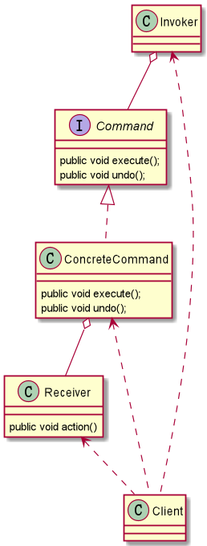
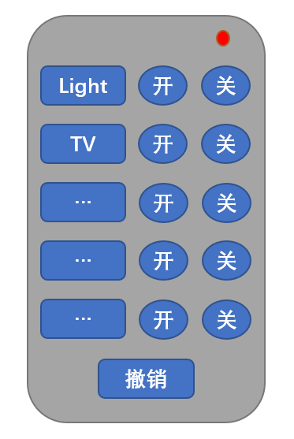
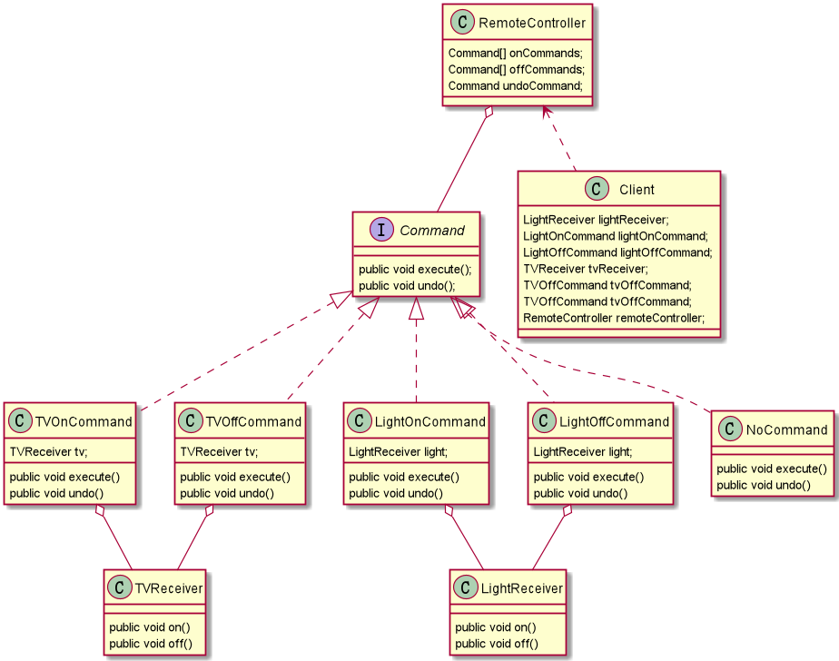

什么是命令设计模式？
命令设计模式—> 行为型模式
基本介绍
命令模式（Command Pattern）在软件设计中，经常需要向某些对象发送请求，但是并不知道请求的接收者是谁，也不知道被请求的操作是哪个，此时只需在程序运行时指定具体的请求接收者即可。
命名模式使得请求发送者与请求接收者消除彼此之间的耦合，让对象之间的调用关系更加灵活，实现解耦。在命名模式中，会将一个请求封装为一个对象，以便使用不同参数来表示不同的请求（即命名），同时命令模式也支持可撤销的操作。
通俗易懂的理解：将军发布命令，士兵去执行。
将军（命令发布者）—> Invoker 士兵（命令的具体执行者） —> Receiver 命令（连接将军和士兵） —> Command ConcreteCommand：将一个接收者对象与一个动作绑定，调用接收者相应的操作，实现execute。

命令设计模式应用实例


Command 命令接口
1 2 3 4 5 6 7 public interface Command public void execute () public void undo () }
TVReceiver
1 2 3 4 5 6 7 8 9 10 public class TVReceiver public void on () System.out.println("TV On！" ); } public void off () System.out.println("Tv Off！" ); } }
TVOnCommand
1 2 3 4 5 6 7 8 9 10 11 12 13 14 15 16 17 18 19 20 21 22 public class TVOnCommand implements Command TVReceiver tv; public TVOnCommand (TVReceiver tv) super (); this .tv = tv; } @Override public void execute () tv.on(); } @Override public void undo () tv.off(); } }
TVOffCommand
1 2 3 4 5 6 7 8 9 10 11 12 13 14 15 16 17 18 19 20 21 22 public class TVOffCommand implements Command TVReceiver tv; public TVOffCommand (TVReceiver tv) super (); this .tv = tv; } @Override public void execute () tv.off(); } @Override public void undo () tv.on(); } }
LightReceiver
1 2 3 4 5 6 7 8 9 10 public class LightReceiver public void on () System.out.println("Light On" ); } public void off () System.out.println("Light Off" ); } }
LightOnCommand
1 2 3 4 5 6 7 8 9 10 11 12 13 14 15 16 17 18 19 20 21 22 public class LightOnCommand implements Command LightReceiver light; public LightOnCommand (LightReceiver light) super (); this .light = light; } @Override public void execute () light.on(); } @Override public void undo () light.off(); } }
LightOffCommand
1 2 3 4 5 6 7 8 9 10 11 12 13 14 15 16 17 18 19 20 21 22 public class LightOffCommand implements Command LightReceiver light; public LightOffCommand (LightReceiver light) super (); this .light = light; } @Override public void execute () light.off(); } @Override public void undo () light.on(); } }
NoCommand
1 2 3 4 5 6 7 8 9 10 11 public class NoCommand implements Command @Override public void execute () } @Override public void undo () } }
RemoteController
1 2 3 4 5 6 7 8 9 10 11 12 13 14 15 16 17 18 19 20 21 22 23 24 25 26 27 28 29 30 31 32 33 34 35 36 37 public class RemoteController Command[] onCommands; Command[] offCommands; Command undoCommand; public RemoteController () onCommands = new Command[5 ]; offCommands = new Command[5 ]; for (int i = 0 ; i < 5 ; i++) { onCommands[i] = new NoCommand(); offCommands[i] = new NoCommand(); } } public void setCommand (int no, Command onCommand, Command offCommand) onCommands[no] = onCommand; offCommands[no] = offCommand; } public void onButtonWasPushed (int no) onCommands[no].execute(); undoCommand = onCommands[no]; } public void offButtonWasPushed (int no) offCommands[no].execute(); undoCommand = offCommands[no]; } public void undoButtonWasPushed () undoCommand.undo(); } }
Client
1 2 3 4 5 6 7 8 9 10 11 12 13 14 15 16 17 18 19 20 21 22 23 24 25 26 27 28 29 30 31 32 33 34 35 36 37 38 39 40 41 42 43 public class Client public static void main (String[] args) System.out.println("==========--- Light ---=========" ); LightReceiver lightReceiver = new LightReceiver(); LightOnCommand lightOnCommand = new LightOnCommand(lightReceiver); LightOffCommand lightOffCommand = new LightOffCommand(lightReceiver); RemoteController remoteController = new RemoteController(); remoteController.setCommand(0 , lightOnCommand, lightOffCommand); System.out.print("按下电灯开按钮：" ); remoteController.onButtonWasPushed(0 ); System.out.print("按下电灯关按钮：" ); remoteController.offButtonWasPushed(0 ); System.out.print("撤销：" ); remoteController.undoButtonWasPushed(); System.out.println("==========--- TV ---=========" ); TVReceiver tvReceiver = new TVReceiver(); TVOnCommand tvOnCommand = new TVOnCommand(tvReceiver); TVOffCommand tvOffCommand = new TVOffCommand(tvReceiver); remoteController.setCommand(1 , tvOnCommand, tvOffCommand); System.out.print("按下TV开按钮：" ); remoteController.onButtonWasPushed(1 ); System.out.print("按下TV关按钮：" ); remoteController.offButtonWasPushed(1 ); System.out.print("撤销：" ); remoteController.undoButtonWasPushed(); } }
命令模式的注意事项和细节
将发起请求的对象与执行请求的对象解耦。发起请求的对象是调用者，调用者只要调用命令对象的 execute() 方法就可以让接收者工作，而不必知道具体的接收者对象是谁、是如何实现的，命令对象会负责让接收者执行请求的动作； 请求发起者 和 请求执行者 之间的解耦是通过命令对象实现的，命令对象起到纽带桥梁作用。容易设计一个命令队列。只要把命令对象放到列队，就可以多线程的执行命令； 容易实现对请求的撤销和重做； 命令模式不足：可能导致某些系统有过多的具体命令类，增加了系统的复杂度，在使用的时候要注意； 空命令也是一种设计模式，它为我们省去了判空的操作。在上面的实例中，如果没有用空命令，我们每按下一 个按键都要判空，给编码带来一定的麻烦； 命令模式经典的应用场景：界面的一个按钮都是一条命令、模拟CMD (DOS命令)的撤销/恢复、触发-反馈机制。
命令模式在Spring框架中的应用
JdbcTemplate -> Invoker
StatementCallback 命令接口（Command）
QueryStatementCallback 匿名内部类 命令接收者（Receiver），实现了命令接口
感谢阅读
 支付宝打赏
支付宝打赏
 微信打赏
微信打赏